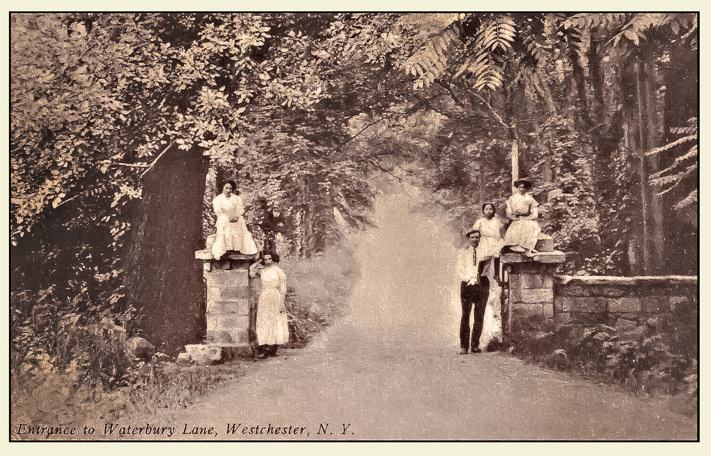

Indica Diamond Bronx Shop Allegedly Cut Its Padlock: What the 800-Pound Seizure Means
A sealed Gun Hill Road storefront allegedly reopened, got raided and was resealed. It was never a licensed dispensary, and here's how you can tell.

Key takeaways
- Indica Diamond, 1334 E Gun Hill Rd, allegedly cut a city padlock and resumed sales; deputies seized 800+ pounds in June 2026.
- It is not a licensed dispensary. State licensing records show 23 licensed adult-use stores open in the Bronx.
- A padlock is a legal order, not a demolition: shops can reopen illegally, win in court or relocate.
- Verify any store with its OCM QR sticker, the universal symbol on packaging and the state's online lookup.
The metal came off the door on East Gun Hill Road, investigators say, and then the vapes came back out.
On June 10 and 11, 2026, the New York City Sheriff's Office returned to Indica Diamond, a storefront at 1334 E Gun Hill Rd at the corner of Fish Avenue in Pelham Gardens. The shop had already been sealed under a city closure order. Investigators say the operators cut the padlock and went back to selling. By the time deputies were done, they had hauled out more than 800 pounds of product, including roughly 364 pounds of flavored vapes and about 250 pounds of THC vapes, then sealed the store again. The operators face penalties of up to $25,000.
Two months on, the storefront is a useful case study for anyone in the northeast Bronx trying to figure out which "dispensary" on their block is real. Here is what happened, what a padlock actually means, and how to tell the difference before you spend a dollar.
First, a correction on the word "dispensary"
In the days after the raid, Indica Diamond kept getting called a "Bronx dispensary." It is not one. There is no Indica Diamond on the state Office of Cannabis Management's list of licensed retailers, and a store operating under a city sealing order is, by definition, not operating legally.
That distinction matters more than it sounds. In everyday Bronx speech, "dispensary" has become shorthand for any shop with a green cross and a glass case. Legally, the word belongs to a much smaller group. State licensing records show 23 licensed adult-use dispensaries open in the Bronx, out of 683 statewide as of June, according to the Office of Cannabis Management's July data. Everything else selling THC over a counter is operating outside the system.
We keep a running, verified list in our borough-wide dispensary map, grouped by neighborhood, so you never have to guess.
What investigators say happened on Gun Hill Road
Based on what the Sheriff's Office has described, the timeline breaks down like this:
- The seal. At some point before June 2026, the city ordered the shop closed and padlocked, part of the enforcement effort known as Operation Padlock to Protect.
- The cut. The operators allegedly removed the padlock and resumed sales, in defiance of the order.
- The return. The Sheriff's Office came back June 10–11, seized more than 800 pounds of product, and resealed the storefront.
- The exposure. Penalties could reach $25,000.
The mix of what was seized says a lot. More than 600 of those pounds were vapes, flavored and THC. That is the product category where an untested market is hardest to judge by eye: you cannot see what is inside a cartridge, and an unlicensed store has no obligation to show you lab results.
A padlock is a pause, not a funeral. The only thing that actually ends an illegal shop is a customer who walks past it.
Why a padlock doesn't mean a shop is gone
Operation Padlock launched on May 7, 2024, and the Bronx was hit hard early. By August 12, 2024, 160 of the 715 shops closed citywide were in the Bronx, and by the next day's tally the borough's count had reached 199. By May 2025, City Hall said roughly 1,400 shops had been closed citywide and more than $95 million in product seized.
Those are real numbers. But a seal on a door is a legal order, not a demolition. Several things can happen after one goes up:
- Someone cuts it. As alleged at Indica Diamond, some operators simply reopen and bet that inspectors won't circle back quickly.
- A court lifts it. On October 29, 2024, a Queens judge ordered one padlock removed on due-process grounds. The city has also won in court: on March 24, 2025, a federal judge in the Southern District of New York upheld the closure of 27 shops.
- The problem moves. A seal covers one storefront. By itself, it does nothing about the supply chain behind it or the next empty retail space down the avenue.
So when you see a shop you thought was shut down lit up again, don't assume it got a license. Check.
| Enforcement measure | Figure | As of |
|---|---|---|
| Bronx shops closed | 160 of 715 citywide | Aug. 12, 2024 |
| Bronx shops closed | 199 | Aug. 13, 2024 |
| Citywide shops closed | about 1,400 | May 14, 2025 (Mayor's Office) |
| Citywide product seized | $95 million+ | May 14, 2025 (Mayor's Office) |
| Statewide OCM sealing orders | about 500 | OCM, statewide to date |
| Statewide OCM inspections | about 2,000 | OCM, statewide to date |
| Statewide OCM seizures | about $125 million | OCM, statewide to date |
| Seized at Indica Diamond | 800+ lbs | June 10–11, 2026 (Sheriff's Office) |
The state runs its own track alongside the city. The Office of Cannabis Management reports roughly 500 sealing orders, 2,000 inspections and about $125 million in seized product statewide. Indica Diamond is one line in that ledger, and a reminder that the ledger has a repeat-customer problem. For more on who is running city enforcement now, see our look at the leadership change at the Sheriff's Office.
How to spot an unlicensed shop in 30 seconds
The good news: legal stores in New York are required to make themselves easy to verify. Here is what to look for, in order.
At the door
- The OCM verification sticker. Licensed dispensaries post a state QR-code sticker near the entrance. Scan it. It should take you to the state's verification page and match the address you're standing at.
- An ID check before you reach the counter. Every licensed store checks for 21+. No check is a red flag.
On the shelf
- The universal symbol. Legal packages carry New York's universal cannabis symbol and a QR code linking to lab results.
- Prices that make sense. Prices far below what licensed stores charge usually mean untaxed, untested product.
- Brands you can look up. Unmarked packaging, knockoff candy-style wrappers and "menus" pushed over messaging apps are warning signs.
Before you leave home
- Search the address on the state's Dispensary Location Verification tool on the Office of Cannabis Management website. If it isn't there, it isn't licensed.
- If you see a sealed shop operating, you can file a report through the Office of Cannabis Management's online incident form at cannabis.ny.gov/report-an-incident.
Where to buy legally near Pelham Gardens
Here's the part that has changed since Operation Padlock began: the northeast Bronx now has real options. The newest licensed store in the entire borough, Upscale Cannabis, opened August 7, 2026, at 3042b Fenton Ave in Pelham Gardens, state licensing records show. Nearby, the list includes:
- Hush, 2460 Williamsbridge Rd, Allerton (CAURD; opened December 2023, the Bronx's second legal store)
- Smoking Scholars, 784 Allerton Ave, Allerton (CAURD; lists delivery)
- Celestial Herbs, 3430 Boston Rd, Olinville/Williamsbridge (CAURD; opened January 2026)
- Nube NYC, 3551 Boston Rd, Baychester (CAURD; opened August 2025)
- Hibernica, 3220 Westchester Ave, Pelham Bay (CAURD; lists Bronx-wide delivery)
If you're farther south, a licensed Bronx dispensary like Buddiez Bronx Cannabis Dispensary on Third Avenue in Melrose, which sponsors the Free Press, is another verified option. Hours and delivery zones vary by store, so check each shop's own site before you head out. Our dispensary reviews break down menus and service across the borough.
A reminder while we're up here: Pelham Bay Park, the city's largest park, is smoke-free by law, as are every other park and beach in the city. Buy legally, take it home, and if you're trying edibles, start low and go slow. Never drive high.
What we're watching
- Repeat offenders. Indica Diamond is not the only Bronx shop drawing repeat visits from enforcers. In Mott Haven, Bud-Zotic was raided for a third time in May; we covered that in our Bud-Zotic report.
- Follow-through on penalties. The up-to-$25,000 exposure is only a deterrent if it's collected. We'll be looking for any public record of how the Indica Diamond case resolves.
- Flavored vapes. Hundreds of pounds of them came out of a single storefront. That is the product that keeps turning up in unlicensed shops, and it's the one legal buyers should be most careful to source from licensed stores with lab results.
Seen a sealed shop back in business on your block? Our The Block roundup tracks enforcement news across the borough, and the state's report form is the fastest way to get an inspector's attention.
Frequently asked questions
Is Indica Diamond a licensed dispensary?
No. It does not appear on the state's list of licensed retailers, and it was operating under a city sealing order. Calling it a dispensary is simply wrong.
What was seized at Indica Diamond?
The Sheriff's Office seized more than 800 pounds of product on June 10–11, 2026, including about 364 pounds of flavored vapes and roughly 250 pounds of THC vapes.
How can I tell if a Bronx weed shop is licensed?
Look for the OCM QR verification sticker near the entrance, New York's universal cannabis symbol and lab-result QR code on packaging, and confirm the address on the state's Dispensary Location Verification tool.
Where can I report a shop that reopened after being padlocked?
You can file a report through the Office of Cannabis Management's online incident form at cannabis.ny.gov/report-an-incident.
Dre Batista
Dre writes The Block, our running read on what the Bronx is talking about — from community board votes on new dispensaries to padlocked smoke shops that reopen. He works from public meetings, court and city records, and local news reports.